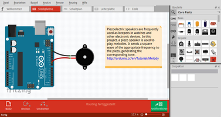
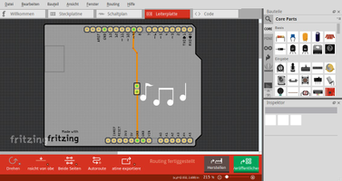
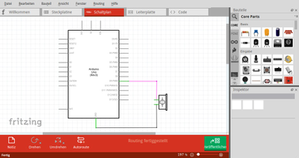
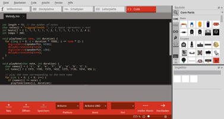
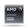

Fritzing
Dieser Artikel wurde für die folgenden Ubuntu-Versionen getestet:
Ubuntu 16.04 Xenial Xerus
Zum Verständnis dieses Artikels sind folgende Seiten hilfreich:
Fritzing  ist eine Software um elektronische Schaltungen auf dem Computer zu erstellen. Die benötigten Bauteile können über das Programm aus dem Internet heruntergeladen werden. Diese Elemente werden auf einer Steckplatine untergebracht und so das eigene Projekt geplant und verwirklicht. Die Entwürfe können abschließend u.a. im .pdf-, .png-, .jpg-Format exportiert oder auf der Homepage von Fritzing veröffentlicht werden. Es ist ebenfalls möglich kostenpflichtig passende Leiterplatten zu bestellen. Praktisch ist die Möglichkeit eine Liste der Bauteile zu erstellen.
ist eine Software um elektronische Schaltungen auf dem Computer zu erstellen. Die benötigten Bauteile können über das Programm aus dem Internet heruntergeladen werden. Diese Elemente werden auf einer Steckplatine untergebracht und so das eigene Projekt geplant und verwirklicht. Die Entwürfe können abschließend u.a. im .pdf-, .png-, .jpg-Format exportiert oder auf der Homepage von Fritzing veröffentlicht werden. Es ist ebenfalls möglich kostenpflichtig passende Leiterplatten zu bestellen. Praktisch ist die Möglichkeit eine Liste der Bauteile zu erstellen.
Zur Programmierung des Arduino kann die integrierte Entwicklungsumgebung verwendet werden.
|  |  |
| Breadboard | Leiterplatte |
Installation¶
Paketquelle¶
Das Programm kann über die Paketverwaltung installiert [1] werden:
fritzing
 mit apturl
mit apturl
Paketliste zum Kopieren:
sudo apt-get install fritzing
sudo aptitude install fritzing
Projektseite¶
Auf der Projektseite findet man die aktuelle Version der Software vor. Von fritzing.org  die Software herunterladen. Diese steht für 32-Bit und 64-Bit-Systeme zur Verfügung.
die Software herunterladen. Diese steht für 32-Bit und 64-Bit-Systeme zur Verfügung.
Im nächsten Schritt das Archiv entpacken [2] und das Programm, nach Vergabe der Ausführrechte [3], über Fritzing starten [4]. Auf Wunsch kann ein Menüeintrag [5] vorgenommen werden.
Hinweis:
Auf der Internetseite findet man viele Projekte die man herunterladen kann. Die .ino-Dateien können zur Programmierung mit dem Arduino verwendet werden.
Hinweis!
Fremdsoftware kann das System gefährden.
Einstellungen¶
Über "Bearbeiten → Einstellungen..." kann das Programm angepaßt werden:
| Einstellungen | |
| Reiter | Beschreibung |
| "Allgemein" | Spracheinstellungen, Farben, Mausrad und Sicherungseinstellungen vornehmen. |
| "Steckplatinenansicht" | Gebogene Drähte und Beinchen (de)aktivieren. |
| "Schaltplanansicht" | Gebogene Drähte und Beinchen (de)aktivieren. |
| "Leiterplattenansicht" | Gebogene Drähte und Beinchen (de)aktivieren. |
| "Code-Ansicht" | Plattform-Unterstützung für den Editor einbinden. Hier ist die auszuführende Datei anzugeben. Arduino und PICAXE stehen zur Verfügung. |
|  |  |
| Schaltplan | Editor |
Bedienung¶
In der Steckplatinenansicht wird das gewünschte Layout mit den Komponenten aus dem rechten oberen Teils des Programmfensters ("Bauteile") per  Drag&Drop zusammengesteckt. Im Feld "Inspektor" können weitere Einstellungen zu dem jeweils gewählten Bauteil vorgenommen werden. Über einen
Drag&Drop zusammengesteckt. Im Feld "Inspektor" können weitere Einstellungen zu dem jeweils gewählten Bauteil vorgenommen werden. Über einen  Rechtsklick auf eine Komponente öffnet sich ein Menü.
Rechtsklick auf eine Komponente öffnet sich ein Menü.
Im Reiter "Code" kann der passende Sketch für den Arduino programmiert und auf diesen geladen werden, wenn dies in den Einstellungen aktiviert wurde.
Beispiele mit dem kompletten Aufbau einer Schaltung und dem dazugehörigen Code findet man unter "Datei → Beispiele". Auf der Projektseite gibt es außerdem einiges an Projekten und Spielereien zu entdecken.
Tastenkürzel¶
| Tastenkürzel | |
| Taste(n) | Beschreibung |
| Strg + 1 - Strg + 5 | Wechsel zwischen den Ansichten. |
| Strg + ? | Online-Hilfe aufrufen. |

Infobox¶
| Fritzing | |
| Sprache: |               ... ... |
| Veröffentlichung: | 2007+ |
| Entwickler: | FH Potsdam / Friends-of-Fritzing e.V. / IXDDS |
| Systemvoraussetzungen: | - |
| Medien: | Download |
| Strichcode / EAN / GTIN: | - |
| Läuft mit: | nativ |
- Erstellt mit Inyoka
-
 2004 – 2017 ubuntuusers.de • Einige Rechte vorbehalten
2004 – 2017 ubuntuusers.de • Einige Rechte vorbehalten
Lizenz • Kontakt • Datenschutz • Impressum • Serverstatus -
Serverhousing gespendet von